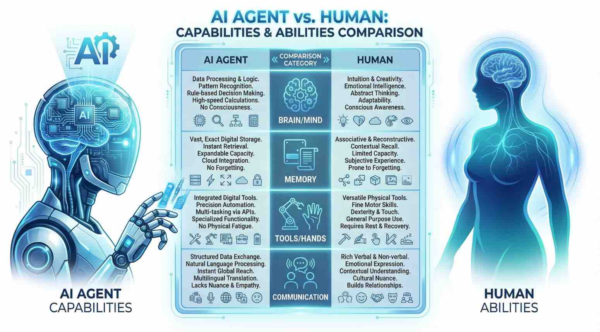
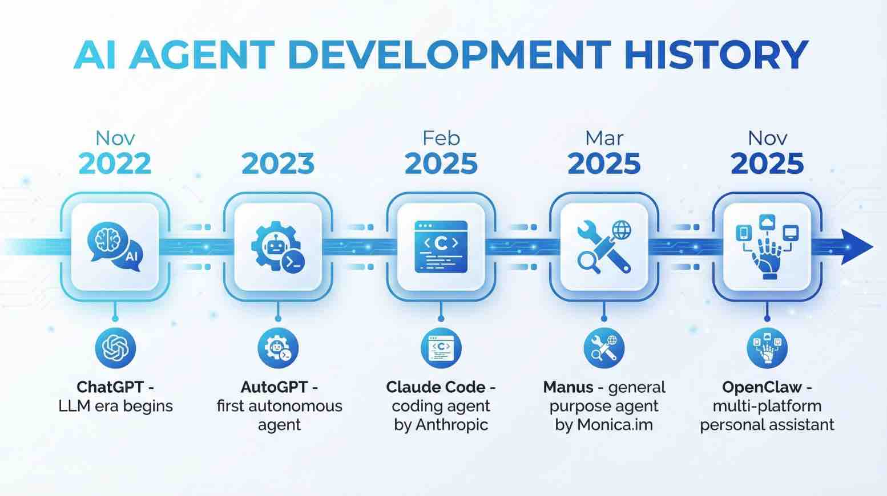
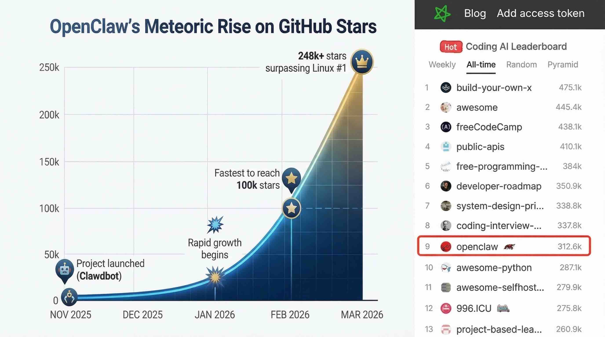
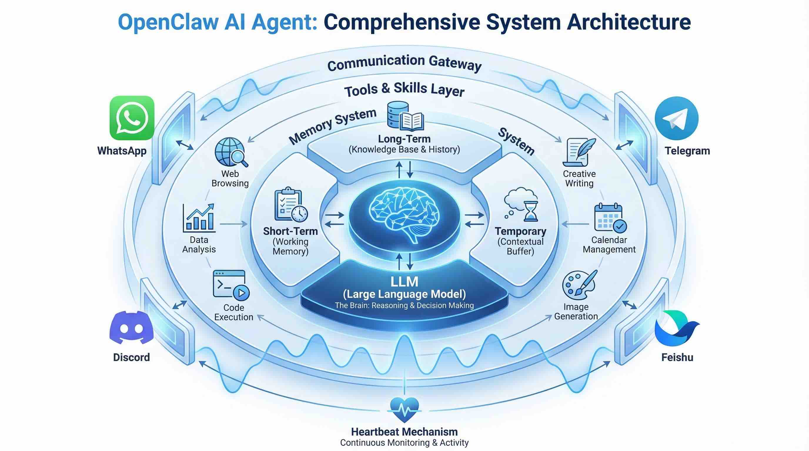
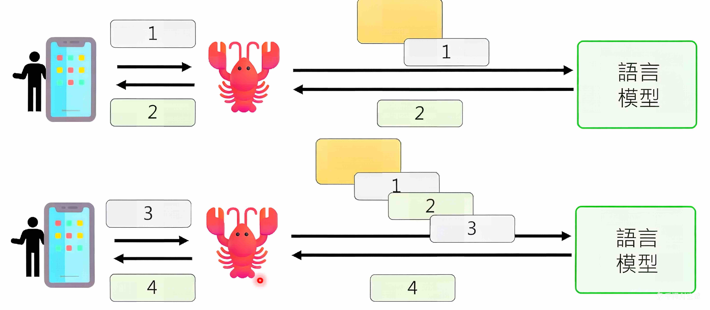
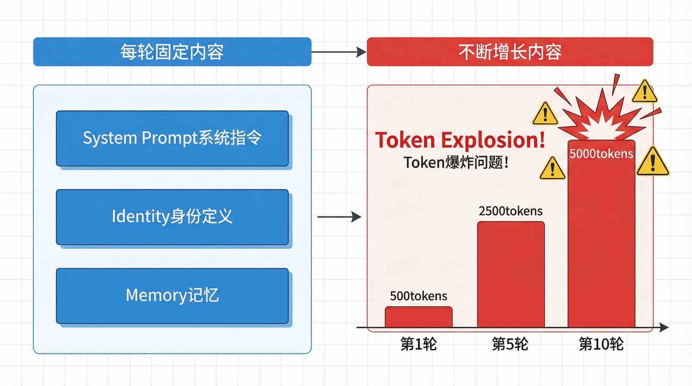
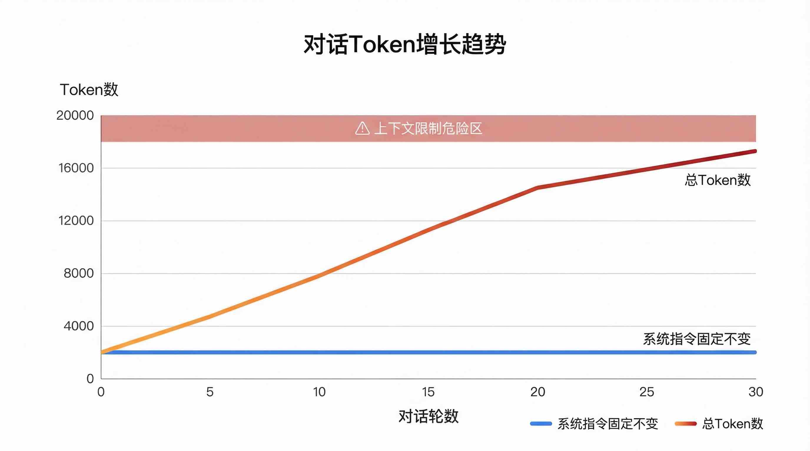
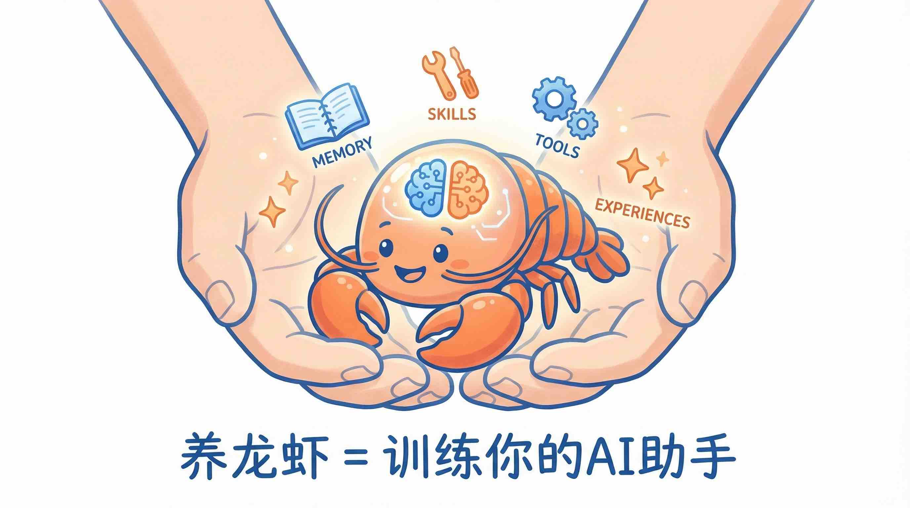
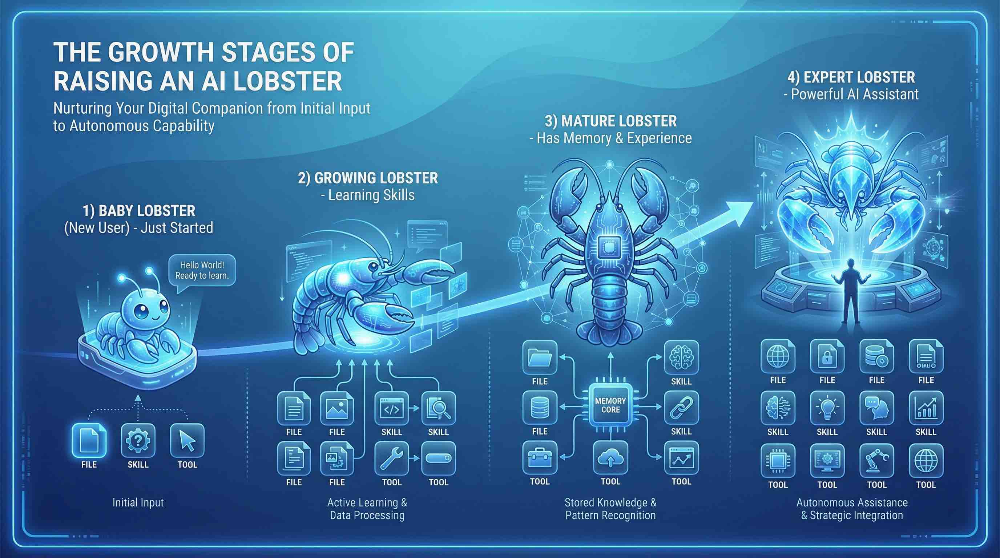

Openclaw🦞 AI Agent工作原理（一）
1. 引言：当科幻逐步成为现实
从电影走进现实——AI助手开始真正"干活"
在科幻电影《钢铁侠》中，托尼·斯塔克的智能助手贾维斯（J.A.R.V.I.S.，Just A Rather Very Intelligent System）不仅能与钢铁侠流畅对话，还能控制战甲、分析数据、管理家庭系统；在《流浪地球》系列中，量子计算机MOSS冷静、理性，甚至拥有自我意识，以“延续人类文明”这一终极目标默默守护着人类的火种。这些科幻电影中的AI形象，都是拥有超级大脑、极强的动手能力和长期记忆的完整智能体。
这些曾经只存在于电影中的人工智能，正在逐步成为现实。而实现这一切的核心技术，就是我们今天要深入探讨的主题—— AI Agent OpenClaw。
2. AI Agent的基础概念
Openclaw这类AI Agent是一种能够自主感知环境、做出决策并执行动作的智能体。它与传统的AI工具（如聊天机器人）有本质区别：聊天机器人只能"思考"和"说话"，而AI Agent则能"思考+行动"，简单来说，AI Agent = ** 超级大脑 + 记忆系统 + 工具能力 + 行动力。** 这种能力的组合使得AI Agent能够像人类助手一样，主动完成复杂任务，而非仅仅停留在信息交流层面。
钢铁侠中的贾维斯和流量地球中的MOSS，AI Agent都具备三大核心要素：超级大脑（思考能力）、动手能力（执行能力）、记忆系统（经验存储能力）。这和人类自身的能力也类似：

| 人类能力 | 对应AI Agent组件 | OpenClaw中的实现 |
|---|---|---|
| 大脑（思考与决策） | 大语言模型（LLM） | 对接云端或本地LLM |
| 记忆系统（经验存储） | 记忆层（Memory） | 长期MD文件（MEMORY.md）+ 短期Memory文件 + 临时会话上下文 |
| 手脚（执行动作） | 工具技能层（工具/Skills） | 命令执行、文件操作、浏览器控制、IM交互等原子化操作 |
| 社交能力（沟通与协作） | 网关层（Gateway） | 多平台消息路由与统一交互 |
表1：OpenClaw Agent与人类能力的类比
在Agent有了LLM作为大脑，拥有记忆系统，并配备丰富的工具和skills后，能够帮我们做很多的工作，包括写文档、做视频等，一个很直观的体感就是，这篇文章几乎都是OpenClaw按照一定的行文思路、章节大纲来写的，并配上了各类插图。
3. AI Agent的发展历史
AI Agent的发展历程，本质上是大语言模型（LLM）从"大脑"进化为"完整体"的过程。OpenClaw并不是第一个agent，在openclaw之前已经有autogpt、claude code、manus等相关agent产品。

大语言模型时代（2022-2023）
2022年11月，OpenAI发布ChatGPT，标志着LLM时代的正式到来。GPT-4、Claude、Gemini、Qwen、DeepSeek、Kimi等模型相继问世，它们拥有强大的推理能力和知识储备。
💡 一个有趣的比喻：LLM就像是学生（读书时）的指导教授，牛马（工作时）的老板——高瞻远瞩，深谋远虑，但只动嘴不动手。你可以和它讨论任何问题，但它无法帮你完成实际的任务。
AutoGPT：第一个吃螃蟹的人（2023年）
AutoGPT的出现让人们第一次看到了"自主AI"的可能性。它能够自己给自己提示（self-prompting），自动分解任务并执行。虽然功能还比较基础，但开启了AI Agent的探索之路。
Claude Code：程序员的编码助手（2025年2月）
Anthropic推出的Claude Code是专注于编程的AI Agent，能够理解代码库、编写代码、运行测试、处理Git操作。它是"能干活"的编程工具代表。但claude code也已经从编程助手发展为agent智能体，可能命名上可能让人误导。
Manus：通用Agent的诞生（2025年）
2025年3月，中国团队Monica.im发布的Manus被誉为"AI Agent的GPT时刻"。它是全球第一款通用型AI Agent产品，能够自主执行复杂任务并交付成果。
OpenClaw：个人AI助手的集大成者（2025年底）
2025年11月，奥地利程序员Peter Steinberger发起了OpenClaw项目。最初只是为了做一个能在终端聊天的机器人，后来逐渐发展为功能强大的个人AI助手。
3.1 OpenClaw与其他Agent的区别
而OpenClaw之所以能在短短两三个月内风靡全球，其GitHub Star数（31w+）甚至超过Linux和TensorFlow等经典项目多年的积累，已经排到了前10，关键在于它实现了两项重大突破。

社交代理能力：OpenClaw通过网关层（Gateway）可以深度集成QQ、企业微信等个人即时通讯工具，让用户可以通过日常聊天应用与AI Agent交互。这与Claude Code等工具仅支持命令行或Slack等专业协作平台形成鲜明对比。社交代理使OpenClaw更像是一个"个人助理"，而非一个需要专门学习使用的工具。
本地优先设计：OpenClaw采用"数据主权归用户"的设计理念，所有用户数据（对话记录、文件、交互日志）均存储在用户本地设备，不依赖第三方云服务。仅在调用云端大模型API时联网，且支持切换为本地模型实现零联网运行，从根源上保障数据隐私与主权。这种设计哲学使OpenClaw能够保护用户隐私。
| 特性 | OpenClaw | Claude Code | Manus |
|---|---|---|---|
| 定位 | 个人AI助手 | 编程辅助工具 | 通用任务执行 |
| 交互方式 | 多平台消息 | 终端CLI | 网页/云端 |
| 本地部署 | ✅ 支持 | ✅ 支持 | ❌ 云端 |
| 多通道接入 | 微信/飞书/Telegram等 | 终端 | 网页 |
| 主动执行 | ✅ Heartbeat | ❌ | 部分 |
| 记忆系统 | 完整长期/短期记忆 | 有限 | 部分 |
核心区别：OpenClaw更像是你的个人助理，可以通过各种聊天软件随时随地联系它帮你做事；而Claude Code更像是专业工具。OpenClaw的社交属性更强，让AI真正成为了一个"活生生"的助手。
4. OpenClaw的整体架构
OpenClaw是一个很强的AI智能体，非常的聪明能干，能完成很多复杂的任务，但其实OpenClaw本身是没有智能的，是AI Agent中非AI的部分。OpenClaw是"躯干"——负责感知、规划、工具调用和记忆存储，而LLM才是"大脑"（比如GPT/Gemini/Claude/Qwen/Kimi/Deepseek等），OpenClaw具体做什么全都需要听从LLM的指挥，通过Prompt工程将LLM的思考转化为可执行的行动。

具体，OpenClaw在和LLM的交互以及动手执行、记忆系统、心跳机制上的是如何来设计和工作的，我们将在下文做详细的介绍。
5. OpenClaw的工作过程
_当你对OpenClaw说"帮我写一篇介绍openclaw工作原理的文章"，它究竟在做发生？和 LLM交互，调用工具，使用skills，更新记忆，是怎么进行的？
5.1 OpenClaw的一次完整交互
🔄 5.1.1 第1轮：理解任务
OpenClaw → LLM：
1 | ┌─────────────────────────────────────────┐ |
LLM思考（🤖 LLM交互）：
用户需要一篇关于OpenClaw的文章。我是OpenClaw，对自己很了解。但要写出有深度的好文章，我需要：行动：调用写作Skill制定大纲
LLM返回：
1 | Thought: 用户需要OpenClaw文章 |
OpenClaw执行Skill（📋 Skills执行）：
1 | ┌─────────────────────────────────────────┐ |
🔄 5.1.2 第2轮：收集资料
OpenClaw将第1轮内容累积，再次发送给LLM：
LLM思考（🤖 LLM交互）：
大纲制定好了。我需要搜索最新资料，了解OpenClaw有什么新特性。行动：调用搜索工具
LLM返回：
1 | Thought: 需要搜索最新资料 |
OpenClaw执行工具（🔧 工具调用）：
1 | ┌─────────────────────────────────────────┐ |
OpenClaw → LLM：
1 | Observation: 搜索完成，获取到4条相关结果 |
🔄 5.1.3 第3-5轮：写入文件
LLM思考（🤖 LLM交互）：
获取到最新资料了。现在开始写文章。行动：调用写作Skill创建文件
LLM返回：
1 | Thought: 开始写入引言 |
OpenClaw执行Skill（📋 Skills执行）：
1 | ┌─────────────────────────────────────────┐ |
OpenClaw → LLM：
1 | Observation: 文件创建成功，引言已写入 |
LLM继续思考下一段内容：
引言写好了，现在写第一章。行动：追加写入
1 | Thought: 引言完成，继续写第一章 |
🔄 5.1.4 第6轮：自我检查
LLM思考（🤖 LLM交互）：
已经写了引言和第一章。我需要检查内容质量。行动：调用文件读取工具
LLM返回：
1 | Thought: 检查已写内容 |
OpenClaw执行工具（🔧 工具调用）：
1 | ┌─────────────────────────────────────────┐ |
🔄 5.1.5 第7-N轮：继续完善 + 记忆更新
LLM思考（🤖 LLM交互）：
检查完成。我需要补充代码示例和配图说明。同时，用户要求写OpenClaw的文章，这是一个重要信息，我应该更新记忆。行动1：继续写入代码示例行动2：更新记忆
LLM返回：
1 | Thought: 补充代码示例和配图说明 |
OpenClaw执行（📋 Skills + 🧠 记忆更新）：
1 | ┌─────────────────────────────────────────┐ |
🔄 5.1.6 第8轮：更新长期记忆
LLM思考（🤖 LLM交互）：
文章基本完成了。用户在撰写关于我的技术博客，这是一个重要事件，我应该把这件事记录到长期记忆中。行动：更新长期记忆
LLM返回：
1 | Thought: 重要事件，记录到长期记忆 |
OpenClaw执行（🧠 记忆更新）：
1 | ┌─────────────────────────────────────────┐ |
🔄 5.1.7 最终轮：返回结果
LLM思考（🤖 LLM交互）：
文章已完成所有章节。任务完成！最终回复
OpenClaw执行结果：
1 | ┌─────────────────────────────────────────┐ |
经过多轮的交互，最终完成任务。

5.2 为什么消耗token很快?及如何优化
在多轮交互中，每次发送给LLM的内容都会包含历史对话：


OpenClaw内置token优化相关策略：
| 策略 | 说明 |
|---|---|
| 会话压缩 | 通过LLM对绘话内容做摘要，压缩过长的历史会话 |
| Skill按需加载 | Skills仅确定使用技能后再加载详情 |
| Sub-agent分流 | 子任务由子Agent处理 |
| 相关记忆加载 | 只加载相关记忆 |
6. "养龙虾"是怎么一回事？
养龙虾，不是在养一只虾，而是在养一个越来越懂你的AI伙伴
6.1 什么是"养龙虾"？
OpenClaw的用户亲切地称使用它的过程为"养龙虾"（因为项目名OpenClaw意为"打开爪子"，谐音"龙虾"）。
-
🦞 龙虾是慢慢长大的，需要时间和耐心
-
🤖 OpenClaw 也是如此，需要你不断地"喂养"它内容
所以，“养龙虾"就是指：通过不断积累记忆、添加技能、扩展工具，让你的OpenClaw从一个"新手"逐渐成长为一个"经验丰富的老手”。

6.2 养的是什么？
你养的其实不是"龙虾"，而是一个不断成长的AI助手：
-
丰富Skills → 学会更多技能
-
积累记忆 → 越来越了解你
-
增加工具 → 能完成更多任务
-
优化配置 → 变得更聪明、更贴心

6.2.1 养记忆——让它越来越懂你
记忆是龙虾的大脑，决定着它对你的了解程度。
龙虾的记忆存储在哪里？
| 记忆类型 | 存储位置 | 说明 |
|---|---|---|
| 长期记忆 | MEMORY.md |
持久保存的个人信息、偏好、习惯 |
| 短期记忆 | memory/日期.md |
最近几天的会话记录 |
| 临时记忆 | 当前Context | 本次对话的上下文 |
💡 核心记忆文件：
MEMORY.md和memory/目录就是龙虾的"大脑"，精心照料它们，龙虾就会越来越聪明！
养记忆的方法：
-
多和龙虾聊天，让它了解你的工作、生活、喜好
-
重要信息主动告诉它，比如"我最近在学习Python"
-
纠正它的错误，让它记住正确的认知
6.2.2 养技能——让它越来越能干
技能是龙虾的双手，决定着它能帮你做什么。
龙虾能学哪些技能？
| 技能类型 | 示例 | 能做什么 |
|---|---|---|
| 搜索技能 | 搜索工具 | 帮你查找信息、资料 |
| 写作技能 | 写作助手 | 帮你写文章、文案 |
| 编程技能 | 代码助手 | 帮你写代码、调试 |
| 办公技能 | 日程管理 | 帮你安排日程、提醒事项 |
| 生活技能 | 天气查询 | 告诉你天气、穿衣建议 |
养技能的方法：
-
给它学习新的Skill（技能文档）
-
告诉它新技能的使用方式
-
不断扩展它的能力边界
💡 想象一下，你的龙虾刚来时只会基础操作，但随着你教它越来越多的技能，它变得越来越能干——既会写代码，又会做分析，还能帮你管日程。
6.2.3 养工具——让它越来越强大
工具是龙虾的装备，决定了它能触达多深多广。
OpenClaw能用的工具：
1 | ┌─────────────────────────────────────────┐ |
养工具的方法：
-
配置更多的工具权限
-
扩展它能访问的平台和系统
-
丰富它与外部世界交互的方式
关于OpenClaw的一些基础介绍就到这里啦，有关OpenClaw的记忆系统、Context Engeering、Skill系统、工具系统等相关介绍，将在后续文章中逐步展开。